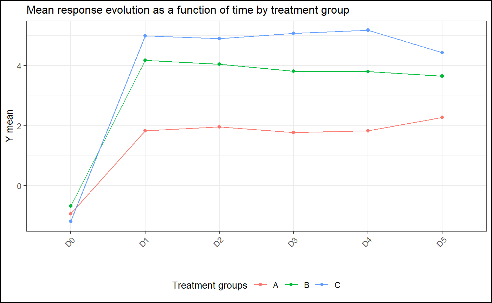

Introduction
The aim of ClinReport is to export statistical outputs (tables and graphics) from R to ‘Microsoft Word’ or R markdown documents in easy to read format according to usual standards of reporting.
The formatted outputs are suitable for any publications and can be used within the scope of clinical trials.
Installation
You can install the released version of ClinReport from CRAN with:
install.packages("ClinReport")Basic example
library(ClinReport)
library(officer)
library(flextable)
# Load data
data(data)
# Descriptive statistics (Numerical response and 2 explicative variables):
tab1=report.quanti(data=data,y="y_numeric",
x1="GROUP",x2="TIMEPOINT",at.row="TIMEPOINT",subjid="SUBJID")
tab1
#>
#> ############################################
#> Quantitative descriptive statistics of: y_numeric
#> ############################################
#>
#> TIMEPOINT Statistics A (N=30) B (N=21) C (N=17)
#> 1 D0 N 30 20 16
#> 2 D0 Mean (SD) -0.93(0.86) -0.67(1.09) -1.19(0.92)
#> 3 D0 Median -0.82 -0.69 -1.26
#> 4 D0 [Q1;Q3] [-1.59;-0.16] [-1.39;-0.06] [-1.62;-0.83]
#> 5 D0 [Min;Max] [-2.34;0.36] [-2.44;2.10] [-2.99;0.66]
#> 6 D0 Missing 1 1 0
#> 7
#> 8 D1 N 30 20 16
#> 9 D1 Mean (SD) 1.83(1.04) 4.17(1.28) 4.98(0.69)
#> 10 D1 Median 1.78 4.19 5.08
#> 11 D1 [Q1;Q3] [ 0.94; 2.54] [ 3.23; 4.92] [ 4.58; 5.46]
#> 12 D1 [Min;Max] [ 0.11;3.88] [ 1.48;6.19] [ 3.80;6.23]
#> 13 D1 Missing 1 0 0
#> 14
#> 15 D2 N 30 20 16
#> 16 D2 Mean (SD) 1.97(1.17) 4.04(0.89) 4.90(1.36)
#> 17 D2 Median 1.66 4.19 5.06
#> 18 D2 [Q1;Q3] [ 1.23; 2.86] [ 3.62; 4.36] [ 4.34; 5.20]
#> 19 D2 [Min;Max] [-0.18;4.36] [ 2.03;5.63] [ 2.39;7.96]
#> 20 D2 Missing 1 1 0
#> 21
#> 22 D3 N 30 20 16
#> 23 D3 Mean (SD) 1.78(1.17) 3.81(0.94) 5.07(1.12)
#> 24 D3 Median 1.78 3.63 5.22
#> 25 D3 [Q1;Q3] [ 0.93; 2.42] [ 3.13; 4.44] [ 4.11; 5.66]
#> 26 D3 [Min;Max] [-0.16;3.90] [ 2.46;6.01] [ 3.16;7.37]
#> 27 D3 Missing 0 1 1
#> 28
#> 29 D4 N 30 20 16
#> 30 D4 Mean (SD) 1.83(0.85) 3.80(0.95) 5.17(1.03)
#> 31 D4 Median 1.67 3.83 4.88
#> 32 D4 [Q1;Q3] [ 1.26; 2.32] [ 3.12; 4.42] [ 4.69; 5.50]
#> 33 D4 [Min;Max] [ 0.38;3.97] [ 2.31;5.41] [ 3.24;6.96]
#> 34 D4 Missing 1 1 1
#> 35
#> 36 D5 N 30 20 16
#> 37 D5 Mean (SD) 2.27(1.20) 3.64(1.19) 4.43(0.98)
#> 38 D5 Median 2.50 3.86 4.57
#> 39 D5 [Q1;Q3] [ 1.77; 3.21] [ 2.59; 4.60] [ 3.44; 4.97]
#> 40 D5 [Min;Max] [-1.19;4.31] [ 0.91;5.12] [ 2.95;6.54]
#> 41 D5 Missing 0 0 0
#>
#> ############################################
# You can have the corresponding graphic:
gg=plot(tab1,title="Mean response evolution as a function of time by treatment group",
legend.label="Treatment groups",ylab="Y mean")
gg
doc=read_docx()
doc=report.doc(tab1,title="Example of a quantitative descriptive table",doc=doc)
# See the results
file=paste(tempfile(),".docx",sep="")
print(doc, target =file)
#shell.exec(file)